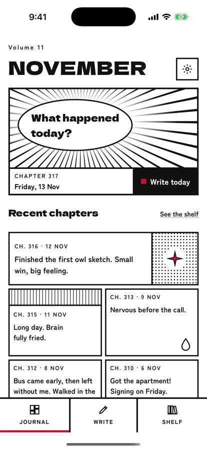
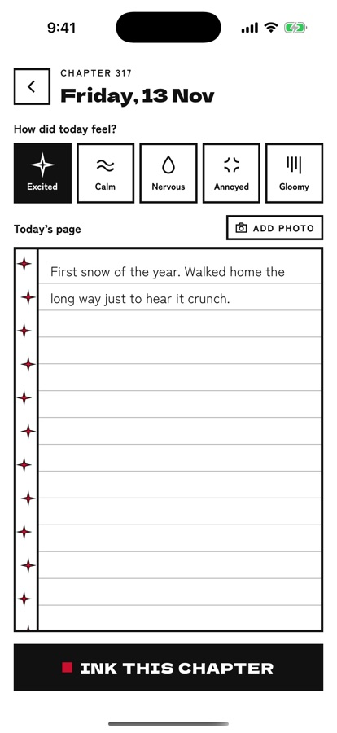
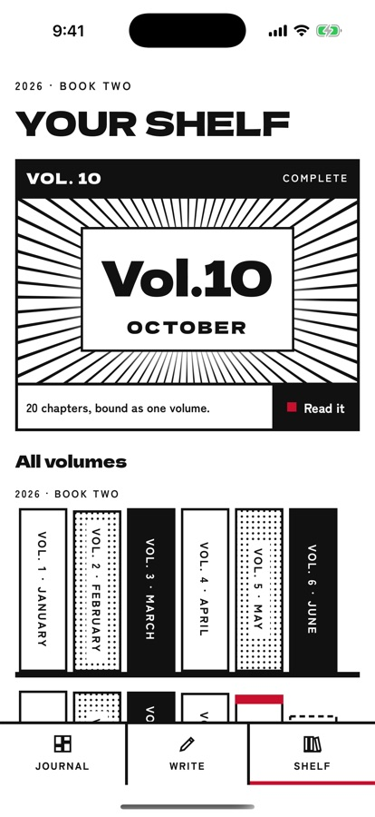

Ch. 317 = 13 Nov
Days are chapters
Each day of the year is numbered like a chapter. Write a line or a page.
For iPhone & iPad



Ch. 317 = 13 Nov
Each day of the year is numbered like a chapter. Write a line or a page.
Vol. 11 = November
At the end of each month, its chapters are bound into a volume on your shelf.
Five moods
Sparkles, calm waves, a sweat drop, an anger vein or gloom lines mark how the day felt.
One photo a day
Add a photo and it’s turned into black-and-white halftone, like a printed panel.
Your journal lives only on your device. No accounts, no cloud, no ads, no tracking, no AI. Lock it with Face ID and export everything as plain text whenever you like.